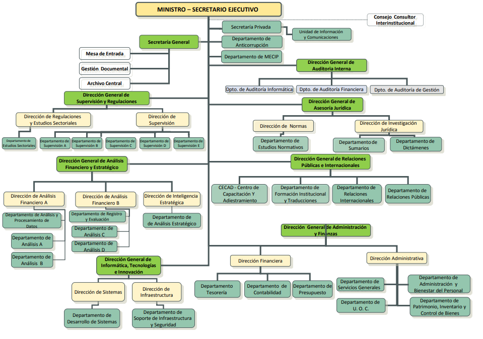

Unidad de Inteligencia Financiera (UIF) de la República del Paraguay
La Secretaría de Prevención de Lavado de Dinero o Bienes - SEPRELAD, es la entidad gubernamental
encargada de regular las obligaciones, las actuaciones y los procedimientos para prevenir e
impedir la utilización del sistema financiero y de otros sectores de la actividad económica para
la realización de los actos destinados al lavado de dinero y el financiamiento del
terrorismo.
La SEPRELAD se rige por la Ley Nº 1015/97 “Que previene y reprime los actos ilícitos
destinados a la legitimación de dinero o bienes” y su modificatoria la Ley Nº 3783/09,
en virtud de la cual, se constituye como Unidad de Inteligencia Financiera (UIF) de la
República del Paraguay, goza de autonomía funcional y administrativa dentro de los
límites de la ley y de los reglamentos.
FUNCIONES Y ATRIBUCIONES
Son funciones y atribuciones de la SEPRELAD dentro del ámbito de aplicación que le confiere la
Ley:
1. Dictar en el marco de las leyes que rigen la materia, los reglamentos de carácter
administrativo que deban observar los sujetos obligados con el fin de evitar, detectar y
reportar las operaciones de lavado de dinero y las operaciones, relacionadas al ámbito de
aplicación de la presente Ley;
2. Recabar de las instituciones públicas y de los sujetos obligados toda la información que
pueda tener vinculación con las informaciones analizadas;
3. Analizar la información obtenida, a fin de determinar transacciones sospechosas, así como
operaciones o patrones relacionados al ámbito de aplicación de la presente Ley;
4. Mantener estadísticas del movimiento financiero relacionadas con las informaciones sometidas
a su competencia;
5. Disponer la investigación de las operaciones de las cuales se deriven indicios racionales de
hechos relacionados con el ámbito de aplicación de la presente Ley;
6. Elevar al Ministerio Público los casos en que surjan indicios vehementes de la comisión de
delitos relacionados con el ámbito de aplicación de la presente Ley para que se inicie la
investigación correspondiente;
7. Elevar los antecedentes a los órganos e instituciones encargados de supervisar a los sujetos
obligados cuando se detecten infracciones administrativas a la ley o los reglamentos, a los
efectos de su investigación y sanción en su caso;
8. Disponer la reglamentación, supervisión y sanción de los sujetos obligados establecidos en el
Artículo 13 de la Ley, que no cuenten con entidades reguladoras o supervisores naturales;
9. Percibir aranceles en contraprestación de los servicios que esta Secretaria brinde. Estos
recursos serán destinados a la implementación, operación, desarrollo, mantenimiento y
actualización de los mecanismos destinados a la lucha del lavado de dinero y financiamiento del
terrorismo, y;
10. Recibir y aceptar como fuente de recursos extraordinarios, donaciones y legados de terceros.
MISION:
«Somos una Unidad de Inteligencia Financiera constituida para regular y supervisar, capacitada para recibir, analizar y proporcionar información relevante a fin de prevenir y combatir el lavado de activos, el financiamiento del terrorismo y de la proliferación de armas de destrucción masiva, en beneficio de la economía nacional y el bienestar de la sociedad.»
VISION:
«Ser una Unidad de Inteligencia Financiera transparente, objetiva e innovada tecnológicamente, capaz de articular acciones para prevenir y generar proactivamente información útil para el combate al lavado de activos, el financiamiento del terrorismo y de la proliferación de armas de destrucción masiva.»
VALORES:
- Proactividad
- Transparencia
- Integridad
- Imparcialidad
- Seguridad
AUTORIDADES


ESTRUCTURA ORGANIZACIONAL

DIRECCIÓNFederación Rusa y Augusto Roa Bastos - Sector Cultural BCP - Portón Nº 4
TELÉFONO +595 21 600435
EMAILconsulta@seprelad.gov.py
HORARIOLunes a Viernes: 7:00 a 15:00 hs
Transparencia Informativa
LEY N° 5.189 / 2014
QUE ESTABLECE LA OBLIGATORIEDAD DE LA PROVISIÓN DE INFORMACIONES EN EL USO DE LOS RECURSOS PÚBLICOS SOBRE REMUNERACIONES Y OTRAS RETRIBUCIONES ASIGNADAS AL SERVIDOR PÚBLICO DE LA REPÚBLICA DEL PARAGUAY
- Estructura Orgánica y Funciones de las dependencias
- Dirección y teléfono de la entidad y de todas las dependencias
- Nómina de funcionarios permanentes, contratados y comisionados
- Nómina de Funcionarios Becados
- Presupuesto de ingresos y gastos asignados
- Detalle de viajes nacionales e internacionales
- Inventario de bienes, muebles, inmuebles y vehículos
- INFORMES DE GESTION
- Informe Anual en cumplimiento a la Ley N° 5189/2014
- Anexo de Personal
- Declaraciones Juradas
- INFORME DE GESTIÓN 1ER SEMESTRE 2020 - Ley 5189/2014
Espacio de denuncias anticorrupción
Las denuncias deberán ser realizadas de forma responsable y razonable, contar con datos verosímiles que permitan hacer una verificación de lo denunciado, caso contrario no serán procesadas. Sólo serán atendidas denuncias sobre hechos de corrupción.
Acceso y uso exclusivo de funcionarios de la SENAC y de funcionarios de las Unidades de Transparencia y Anticorrupción UTAs de las instituciones del Poder Ejecutivo y de las instituciones que posean convenio con la SENAC y que cuentan con ususarios habilitados por la SENAC. Sirve para la gestión de denuncias, registro y actualización de los casos de supuestos hechos de corrupción e irregularidades administartivas, comunicación con el denunciante según el caso y comunciación SENAC/UTA - UTA/SENAC.
Enlaces de Interés
GUÍAS Y TIPOLOGÍAS
Protocolo guía para inmovilización de activos
Guía Estudio Sectorial de Riesgos de OSFL
Guía riesgos de LA/FT del sector Remesadoras
EVALUACION NACIONAL DE RIESGOS DE FINANCIAMIENTO DE TERRORISMO EN PARAGUAY
BOLETÍN INFORMATIVO SOBRE ACTIVOS VIRTUALES
Guía de Conclusiones del ESR - AV - PSAV
GUÍA DE RIESGOS LA-FT SECTOR INMOBILIARIO
GUÍA DE CONCLUSIONES DEL ESTUDIO SECTORIAL DE RIESGOS DE LA/FT DEL SECTOR AUTOMOTOR.